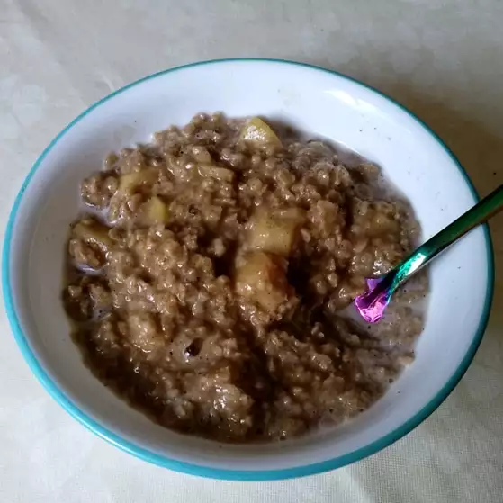

Apple Cinnamon Oatmeal

Welcome I can see you have a "good taste" in oatmeal,
apple cinnamon oatmeal adds a nice. savory taste to something that alot of people considered boring
Lets get started
Ingriedients
- 1 Cup of Water
- 1/4 Cup Apple Juice
1 Apple, cored and chopped
- 2/3 Cup rolled oats
- 1 Teaspoon ground cinnamon
- 1 Cup of Milk
Now that we have accumulated all the neccessary ingriedients,lets get cooking!
Steps
- Pour the water,apple juice, and apples in a saucepan.
- Bring to a boil over high heat.
- Once at boil lower heat and stir in the rolled oats and cinnamon.
- Return to a boil,then lower heat to low, and simmer until thick, about 3 minutes.
- Spoon into serving bowls, and pour milk over the servings,and enjoy!
Thanks for reading